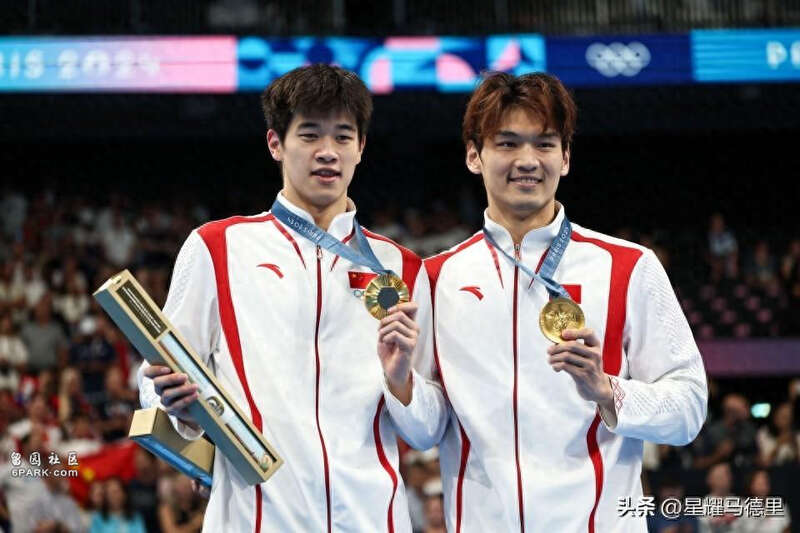
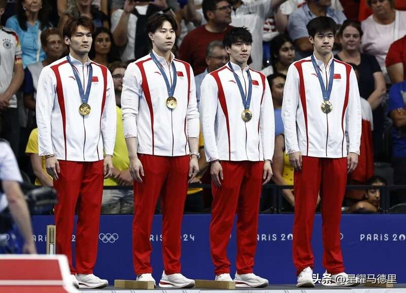

中国游泳队在巴黎奥运会表现出色，然而这也再次让西方尤其是美国感到眼红，从而试图再次诬陷中国游泳队。近日，39岁的美国传奇游泳选手迈克尔-菲尔普斯，便再次“作妖”。

菲尔普斯出席听证会，称他想要一个公平竞争的竞技环境，他声称美国已不再信任WADA（世界反兴奋剂机构）。不仅如此，听证会上，菲尔普斯还将矛头直指中国。
菲尔普斯诬陷中国运动员正在利用不公平的机制，并且指责世界反兴奋剂机构对针对中国运动员的“服药”指控，视而不见。菲尔普斯扬言，目前世界反兴奋剂机构对中国运动员的反兴奋剂检测还不够，还需要继续加大力度。
39岁的“菲鱼”还在发布会，控诉外界多年来一直传言指责他“吃药”，这严重摧残了他的精神。
而与菲尔普斯一同出席听证会的美国游泳名将艾莉森-施密特，则质疑中国游泳队在东京奥运会800米自由泳接力赛夺得的金牌，称“我们永远也不知道他们是不是服用了兴奋剂。”此外，民主党众议员凯西·卡斯特宣称中国贿赂反兴奋剂机构，以逃避审查。
巴黎奥运会游泳项目落下帷幕，而中国游泳队也在开局不利的情况下，以2金3银7铜的成绩圆满收官，12枚奖牌为历届最多，获奖运动员人数创历史新高。

尤其是刚满20岁的新星潘展乐，更是令人振奋地打破男子100米自由泳世界纪录，此外中国队也创造男女混合4×100米混合泳接力得亚洲纪录。
如此耀眼的表现，这也不难理解就连已经夺得过23枚奥运金牌的菲尔普斯，都被潘展乐的表现感到“破防”。
Advertisements